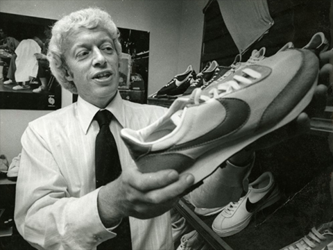
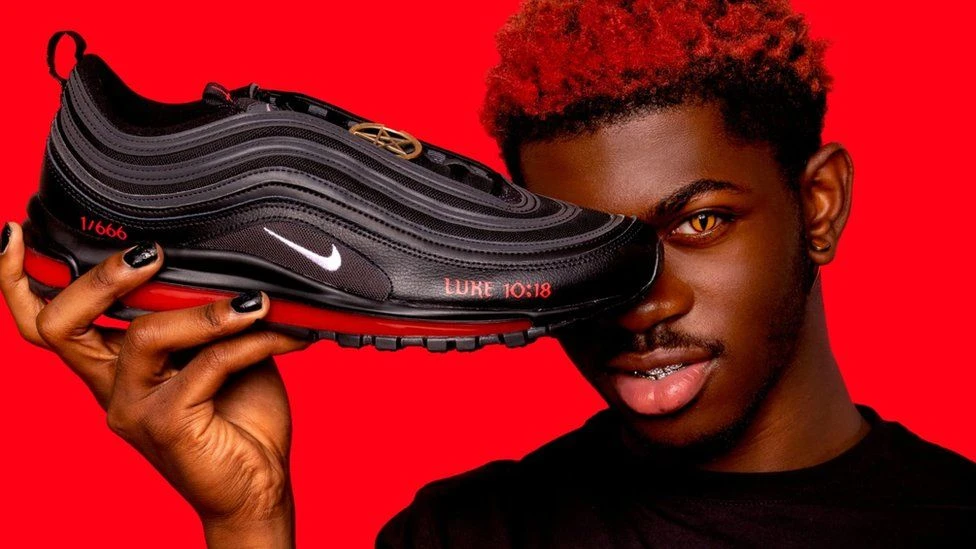
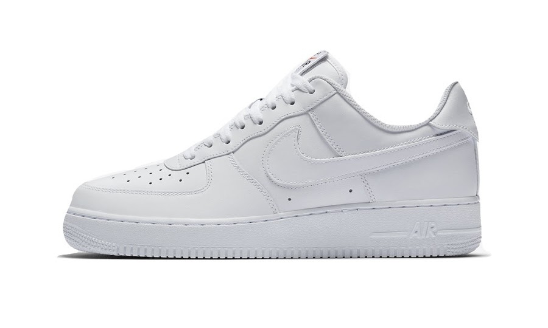

1. Lịch sử hình thành và phát triển của thương hiệu giày Nike
Nike là một trong những thương hiệu thể thao nổi tiếng nhất trên thế
giới. Từ học sinh tiểu học cho đến các vận động viên chuyên nghiệp,
không ai có thể phủ nhận sức hấp dẫn của Nike. Nếu bạn khảo sát xem có
bao nhiêu người đã hoặc đang sở hữu các sản phẩm của Nike, thì con số
này sẽ khiến bạn bất ngờ. Chất lượng của sản phẩm tạo nên uy tín của
thương hiệu. Nhưng không thể phủ nhận vai trò của những chiến lược
marketing vô cùng hiệu quả đã góp phần tạo nên thành công của Nike ngày
hôm nay. Nike là nhà cung cấp giày và quần áo thể thao hàng đầu thế
giới, đồng thời là nhà sản xuất quần áo thể thao lớn, với tổng doanh thu
hơn 18,6 tỷ USD trong năm tài chính 2008. Tính đến năm 2008, công ty có
hơn 30.000 nhân viên trên toàn thế giới.Khởi đầu từ những chiếc giày
Tiger… Mọi chuyện bắt đầu với Nike vào đầu những năm 1960, khi người
sáng lập Nike, Knight viết một trang giải thích cách công nhân Nhật Bản
sản xuất giày chạy bộ giá rẻ. Sau đó, trong chuyến đi đến Nhật Bản, anh
nhận thấy Công ty Tiger chuyên sản xuất giày chạy bộ chất lượng cao. Năm
1964, Knight và người bạn William Bowerman đã trả 500 đô la để nhập khẩu
giày hổ về Mỹ. Đến năm 1972, công ty bắt đầu thiết kế những đôi giày
mang thương hiệu Nike của riêng mình và ký hợp đồng gia công với các nhà
máy ở Châu Á (vẫn tồn tại cho đến ngày nay). Công ty non trẻ này đã ở
trong một thời điểm hoàn hảo khi hoạt động chạy bộ trở nên phổ biến ở
Hoa Kỳ vào những năm 1970: Nike có tổng doanh thu là 3 triệu đô la vào
năm 1972, và tổng doanh thu là 270 triệu đô la trong những năm 1970 và
vào năm 1980. Tổng doanh thu hàng năm lên tới 1 tỷ đô la Mỹ vào năm
1986.

2.Những sản phẩm nổi bật của thương hiệu Nike
Thiết bị và dụng cụ thể thao Nike Nike sản xuất tất cả các loại dụng cụ
thể thao. Sản phẩm đầu tiên của họ là giày chạy bộ. Giờ đây, họ cũng sản
xuất giày, áo thi đấu, quần short, giày bệt, giày bóng rổ, v.v. Thích
hợp cho nhiều môn thể thao, bao gồm điền kinh, bóng chày, khúc côn cầu
trên băng, quần vợt, bóng đá hiệp hội (bóng đá), lacrosse, bóng rổ và
cricket. Nike Air Max là một sản phẩm giày dép thuộc sở hữu của Nike,
Inc. Được phát hành lần đầu tiên vào năm 1987. Sau đó, các dòng sản phẩm
khác đã được giới thiệu, chẳng hạn như Air Huarache ra mắt vào năm 1992.
Những bổ sung mới nhất cho dòng sản phẩm là giày trượt Nike 6.0, Nike
NYX và Nike SB. Nike gần đây đã tung ra một đôi giày cricket có tên là
Air Zoom Yorker, được thiết kế để nhẹ hơn 30% so với các đối thủ cạnh
tranh. Năm 2008, Nike ra mắt Air Jordan XX3, một đôi giày bóng rổ hiệu
suất cao được thiết kế đặc biệt để bảo vệ môi trường.Nike bán nhiều sản
phẩm khác nhau, bao gồm giày và quần áo cho các hoạt động thể thao như
hiệp hội bóng đá, bóng rổ, chạy bộ, thể thao thi đấu, quần vợt, bóng đá
Mỹ, điền kinh, gôn và huấn luyện, đá chéo nam. Nike cũng bán giày cho
các hoạt động ngoài trời, chẳng hạn như quần vợt, chơi gôn, trượt ván,
bóng đá hiệp hội, bóng chày, bóng bầu dục Mỹ, đi xe đạp, bóng chuyền,
đấu vật, hoạt náo, thể thao dưới nước, đua xe, ô tô và các mục đích giải
trí và thể thao khác. Nike gần đây đã hợp tác với Apple. Sản xuất các
sản phẩm Nike +, có thể theo dõi thành tích của các vận động viên chạy
qua radio trong giày được kết nối với iPod nano. Mặc dù sản phẩm đưa ra
số liệu thống kê hữu ích, nhưng nó đã bị các nhà nghiên cứu chỉ trích vì
có thể xác định người dùng thiết bị RFID cách xa 60 feet (18 m) để sử
dụng dựng phim nhỏ, thông minh, có thể che giấu trong mạng cảm biến
không dây. Năm 2004, Nike đưa ra chương trình / bộ phận đào tạo SPARQ.
Một số đôi giày mới nhất của Nike bao gồm Flywire và Lunarlite Foam để
giảm trọng lượng. Giày chạy bộ Air Zoom Vomero được ra mắt vào năm 2006
và hiện đã phát triển đến thế hệ thứ 11. Nó kết hợp những cải tiến mang

3.Những đôi giày Nike nổi tiếng
Nike Air Force 1 Bruce Kilgore là nhà thiết kế giày Nike Air Force số 1 và khởi nghiệp là một nhà điêu khắc. Nike Air Force 1 (Nike Air Force 1) xuất hiện vào năm 1983, là kinh điển thời đại của giày thể thao nhưng cho đến nay nó vẫn là huyền thoại, nó gần như là mẫu giày được rất nhiều bạn trẻ ưa chuộng. Nike Air Force 1 là mẫu giày bóng rổ đầu tiên của Nike sử dụng công nghệ “air”, có túi khí ở gót giúp đệm xuống đất, giảm chấn thương cho bàn chân và hỗ trợ cực kỳ hiệu quả. Đồng thời, các nhà sản xuất giày dép khác cũng vượt xa. Đồng thời, điểm nhấn của Nike Air Force 1 chính là phần quai đeo cổ chân thời trang, tạo nét thẩm mỹ rất riêng và thanh lịch. Một đặc điểm nổi bật khác của nó là một miếng thiếc nhỏ (một số phiên bản sử dụng sắt, bạc, v.v.) được lắp vào dây giày ngay từ cái nhìn đầu tiên, được khắc trên mảnh thiếc số 82 chính là năm sinh của nó.Cho đến nay, Nike Air Force 1 đã có hơn 1.700 mẫu và phiên bản màu sắc, nhưng do tính cổ điển cực kỳ phổ biến nên hai màu cơ bản bán chạy nhất là trắng trên nền trắng và đen trên nền đen. Phiên bản thường của Nike Air Force 1 có giá thành tương đối phù hợp với mọi đối tượng, kể cả học sinh, sinh viên. Tuy nhiên, cũng có những phiên bản giá cao lên đến 2.000 USD, chúng đều được thiết kế bằng da cá sấu và da trăn, đây là phiên bản đắt nhất của Nike Air Force 1. Chính vì vậy, Air Force 1 luôn trở thành bộ sưu tập Sneakerhead lý tưởng. Tính đến thời điểm hiện tại, Air Force 1 đều đặn thu về hơn 800 triệu USD mỗi năm cho Nike. Nike Air Force 1 ban đầu được tạo ra để dành cho bóng rổ, nhưng cho đến nay, nó đã dần trở nên phổ biến đối với các ngôi sao giải trí có tầm ảnh hưởng và biến nó thành một phụ kiện thời trang.
